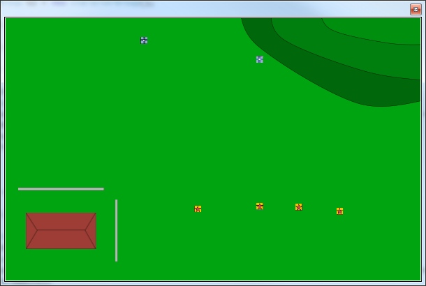

Unnamed platformer strategy game
My next game project changed from platformer to strategy game. Better to do something you like, so there's a chance it will be finished one day :)
Style: medieval / fantasy boardgame look with pretty simple rules (like Warhammer etc.).
Game is in real-time and used can stop time to give commands to units.
UI is separated from Game Engine, so engine works with WinForms and XNA (XNA.Game replaces Game-class).
Have to find nice physics engine from somewhere. I don't have enough time to make my own (working one).
Architecture is almost ready (at least for now).
Getting good tips from Replica Island's architecture.
Google I/O 2009: Writing Real Time Games For Android.

Full view of map
GameState Update sequence at the moment:

Notes:
UI
- User Interface
Game
- Main loop
StateManager
- Keep track in what state game is
State
- Game bahaviour logic
- Decide what to do when updating and with inputs
InputManager
- Handle Input Queue
- Execute InputActions
InputAction
- Move Camera, Zoom, Select etc.
- DoAction does all the action
ObjectManager
- Creates and handles all GameObjects
QuadTree
- Keeps track of object locations
GameObject
- Objects you can see in the UI
- Includes blocking objects, like houses, walls and trees.
Character
- Objects that participate in the "game"
Behavior
- What will AI character do
Item
- Objects Characters can use (weapons, armor etc.)
CameraSystem
- Keeps track of coordinates of what is shown in window
GameArea
- Info of full map
----------------------------------------------------
Game has different States:
Init
- Load all objects
GameState
- Game is running
Pause
- Game is paused
- User can view map, give commands to GameObjects, but objects are not moving.
End
- Show statistics
----------------------------------------------------
On UserInput current state checks if input is allowed in this state and InputManager adds inputs to queues and returns those to State at Update.
User can zoom in/out camera. Game will only draw object on view (using QuadTree).
QuadTree is also used to check collisions and when calculating routes to target.
These were amazing graphics for platformer.